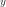
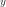
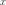
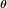
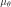

Note
Click here to download the full example code
Bayesian calibration of a computer code¶
In this example we are going to compute the parameters of a computer model thanks to Bayesian estimation.
Let us denote the observation sample,
the model prediction,
 the density function of observation 
conditional on model prediction
the density function of observation 
conditional on model prediction  ,
and the calibration parameters we wish to estimate.
,
and the calibration parameters we wish to estimate.
The posterior distribution is given by Bayes theorem:
where means “proportional to”, regarded as a function of  .
.
The posterior distribution is approximated here by the empirical distribution of the sample generated by the Metropolis-Hastings algorithm. This means that any quantity characteristic of the posterior distribution (mean, variance, quantile, …) is approximated by its empirical counterpart.
Our model (i.e. the compute code to calibrate) is a standard normal linear regression, where
where .
The “true” value of  is:
is:

We use a normal prior on :
where
is the mean of the prior and
is the prior covariance matrix with
The following objects need to be defined in order to perform Bayesian calibration:
The conditional density must be defined as a probability distribution.
The computer model must be implemented thanks to the ParametricFunction class. This takes a value of
as input, and outputs the vector of model predictions ,
as defined above (the vector of covariates is treated as a known constant).
When doing that, we have to keep in mind that will be used as the vector of parameters corresponding
to the distribution specified for . For instance, if is normal,
this means that must be a vector containing the mean and standard deviation of .The prior density
 encoding the set of possible values for the calibration parameters,
each value being weighted by its a priori probability, reflecting the beliefs about the possible values
of before consideration of the experimental data.
Again, this is implemented as a probability distribution.
encoding the set of possible values for the calibration parameters,
each value being weighted by its a priori probability, reflecting the beliefs about the possible values
of before consideration of the experimental data.
Again, this is implemented as a probability distribution.Metropolis-Hastings algorithm(s), possibly used in tandem with a Gibbs algorithm in order to sample from the posterior distribution of the calibration parameters.
import pylab as pl
import openturns as ot
import openturns.viewer as viewer
from matplotlib import pylab as plt
ot.Log.Show(ot.Log.NONE)
Dimension of the vector of parameters to calibrate
paramDim = 3
# The number of obesrvations
obsSize = 10
Define the observed inputs  .
.
xmin = -2.0
xmax = 3.0
step = (xmax - xmin) / (obsSize - 1)
rg = ot.RegularGrid(xmin, step, obsSize)
x_obs = rg.getVertices()
Define the parametric model that associates each
observation  and value of  to the parameters
of the distribution of the corresponding observation :
here where  ,
the first output of the model, is the mean and
,
the first output of the model, is the mean and  ,
the second output of the model, is the standard deviation.
,
the second output of the model, is the standard deviation.
fullModel = ot.SymbolicFunction(
["x", "theta1", "theta2", "theta3"], ["theta1+theta2*x+theta3*x^2", "1.0"]
)
To differentiate between the two classes of inputs ( and ),
we define a ParametricFunction from fullModel
and make the first input (the observations ) its parameter:
.
We set as a placeholder,
but will actually take the values of the observations
when we sample .
linkFunction = ot.ParametricFunction(fullModel, [0], [1.0])
print(linkFunction)
Out:
ParametricEvaluation([x,theta1,theta2,theta3]->[theta1+theta2*x+theta3*x^2,1.0], parameters positions=[0], parameters=[x : 1], input positions=[1,2,3])
Define the observation noise and create a sample from it.
ot.RandomGenerator.SetSeed(0)
noiseStandardDeviation = 1.0
noise = ot.Normal(0, noiseStandardDeviation)
noiseSample = noise.getSample(obsSize)
Define the vector of observations  ,
here sampled using the “true” value of : .
,
here sampled using the “true” value of : .
thetaTrue = [-4.5, 4.8, 2.2]
y_obs = ot.Sample(obsSize, 1)
for i in range(obsSize):
linkFunction.setParameter(x_obs[i])
y_obs[i, 0] = linkFunction(thetaTrue)[0] + noiseSample[i, 0]
Draw the model predictions vs the observations.
functionnalModel = ot.ParametricFunction(fullModel, [1, 2, 3], thetaTrue)
graphModel = functionnalModel.getMarginal(0).draw(xmin, xmax)
observations = ot.Cloud(x_obs, y_obs)
observations = ot.Cloud(x_obs, y_obs)
observations.setColor("red")
graphModel.add(observations)
graphModel.setLegends(["Model", "Observations"])
graphModel.setLegendPosition("topleft")
view = viewer.View(graphModel)
Define the distribution of observations conditional on model predictions.
Note that its parameter dimension is the one of  , so the model must be adjusted accordingly.
, so the model must be adjusted accordingly.
conditional = ot.Normal()
Define the mean , the covariance matrix , then the prior distribution of the parameter .
thetaPriorMean = [-3.0, 4.0, 1.0]
sigma0 = [2.0, 1.0, 1.5] # standard deviations
thetaPriorCovarianceMatrix = ot.CovarianceMatrix(paramDim)
for i in range(paramDim):
thetaPriorCovarianceMatrix[i, i] = sigma0[i] ** 2
prior = ot.Normal(thetaPriorMean, thetaPriorCovarianceMatrix)
prior.setDescription(["theta1", "theta2", "theta3"])
The proposed steps for , and will all follow a uniform distribution.
proposal = ot.Uniform(-1.0, 1.0)
Test the Metropolis-Hastings sampler¶
Creation of a single component random walk Metropolis-Hastings (RWMH) sampler. This involves a combination of the RWMH and the Gibbs algorithms.
initialState = thetaPriorMean
We create a RandomWalkMetropolisHastings sampler for each component.
Each sampler must be aware of the joint prior distribution.
We also use the same proposal distribution, but this is not mandatory.
mh_coll = [
ot.RandomWalkMetropolisHastings(prior, initialState, proposal, [i])
for i in range(paramDim)
]
Each sampler must be made aware of the likelihood. Otherwise we would sample from the prior!
for mh in mh_coll:
mh.setLikelihood(conditional, y_obs, linkFunction, x_obs)
Finally, the Gibbs algorithm is constructed from all Metropolis-Hastings samplers.
sampler = ot.Gibbs(mh_coll)
Tuning of the Gibbs algorithm:
sampler.setThinning(1)
sampler.setBurnIn(2000)
Generate a sample from the posterior distribution of the parameters .
sampleSize = 10000
sample = sampler.getSample(sampleSize)
Look at the acceptance rate (basic check of the sampling efficiency: values close to are usually recommended for Normal posterior distributions).
[mh.getAcceptanceRate() for mh in sampler.getMetropolisHastingsCollection()]
Out:
[0.46225, 0.29283333333333333, 0.12466666666666666]
Build the distribution of the posterior by kernel smoothing.
kernel = ot.KernelSmoothing()
posterior = kernel.build(sample)
Display prior vs posterior for each parameter.
fig = pl.figure(figsize=(12, 4))
for parameter_index in range(paramDim):
graph = posterior.getMarginal(parameter_index).drawPDF()
priorGraph = prior.getMarginal(parameter_index).drawPDF()
priorGraph.setColors(["blue"])
graph.add(priorGraph)
graph.setLegends(["Posterior", "Prior"])
ax = fig.add_subplot(1, paramDim, parameter_index + 1)
_ = ot.viewer.View(graph, figure=fig, axes=[ax])
_ = fig.suptitle("Bayesian calibration")
plt.show()
Total running time of the script: ( 0 minutes 1.766 seconds)